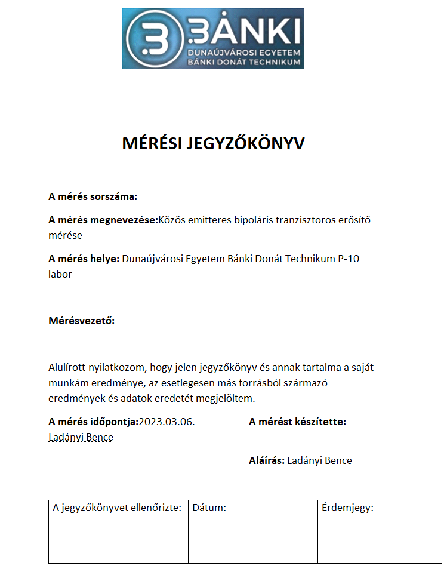
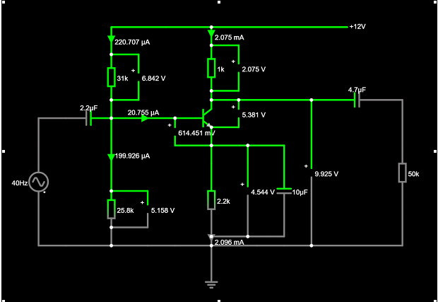
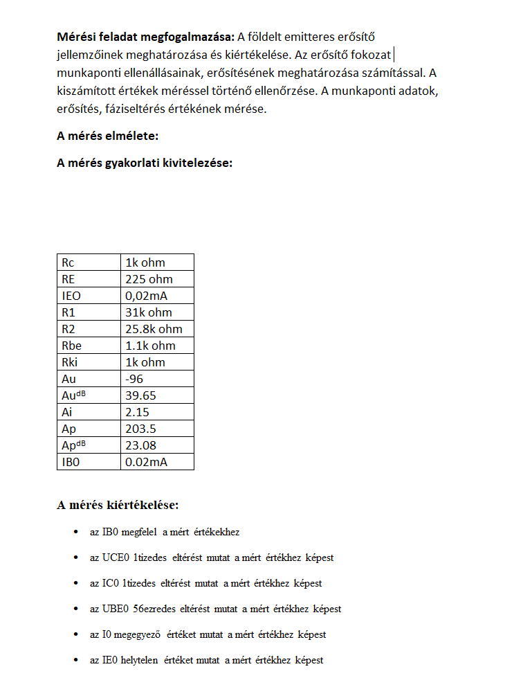

Elektronika
Önreflexó
A tantárgy rengeteget hozzátett a tudásomhoz és a műszaki gondolkodásom fejlődéséhez. A tantárgy során nemcsak elméleti tudást szereztem, hanem gyakorlati tapasztalatokat is, amelyek segítettek jobban megérteni az elektronikai eszközök és rendszerek működését. A legnagyobb kihívás számomra az alapvető áramkörök és komponensek, mint az ellenállások, kondenzátorok és tranzisztorok működésének megértése volt. Eleinte nehéz volt összerakni, hogy miért működnek úgy, ahogy működnek, de a gyakorlati feladatok segítettek abban, hogy a megértés sokkal mélyebb szintre juthasson.
Tematika:
- Alapvető elektronikai eszközök és áramkörök


